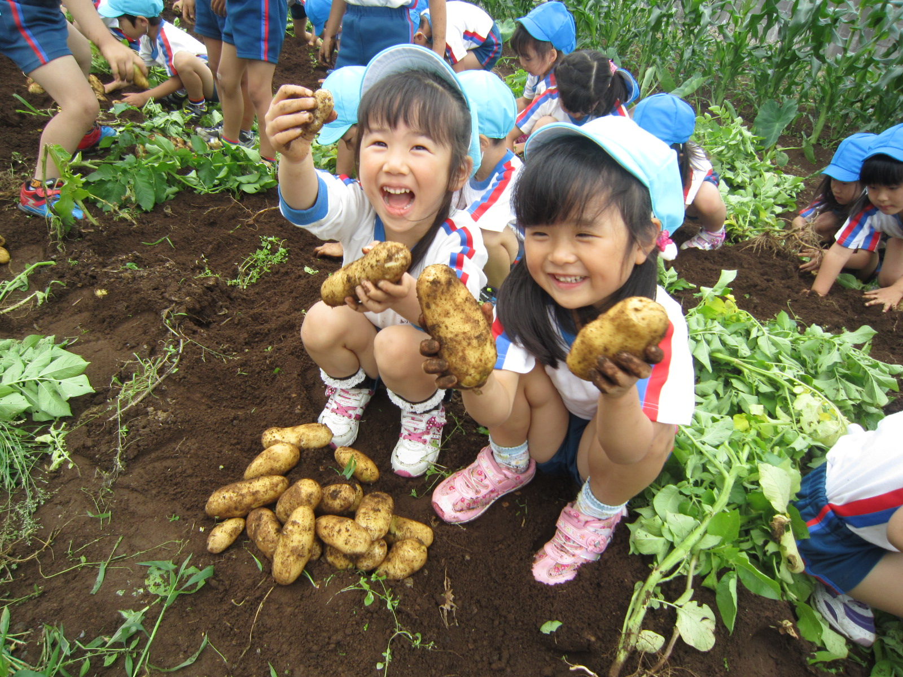
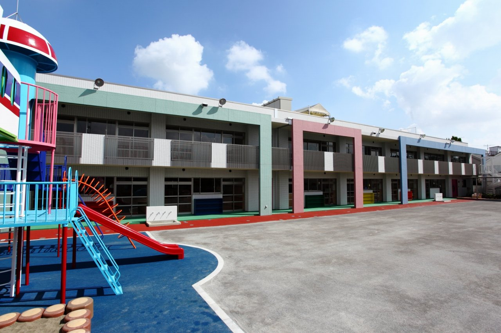
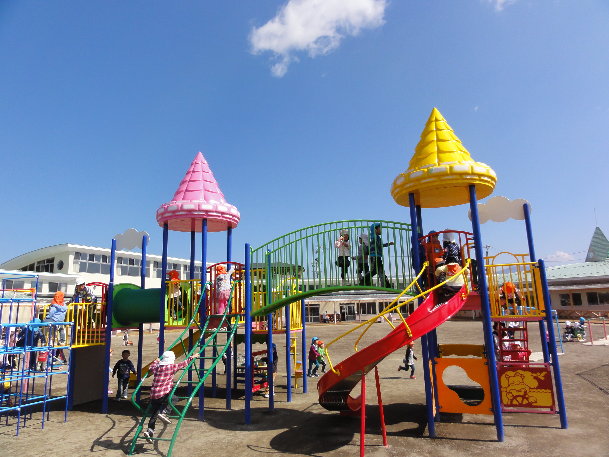
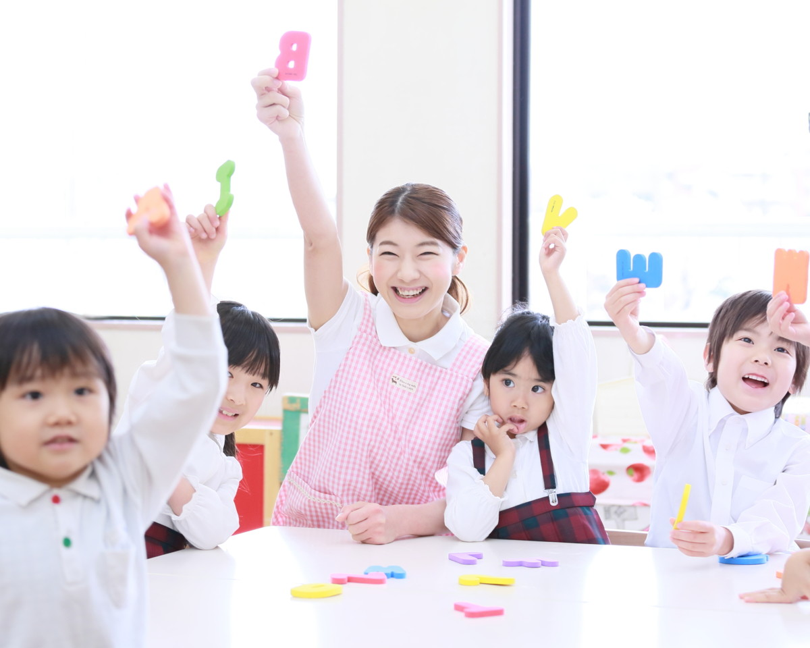
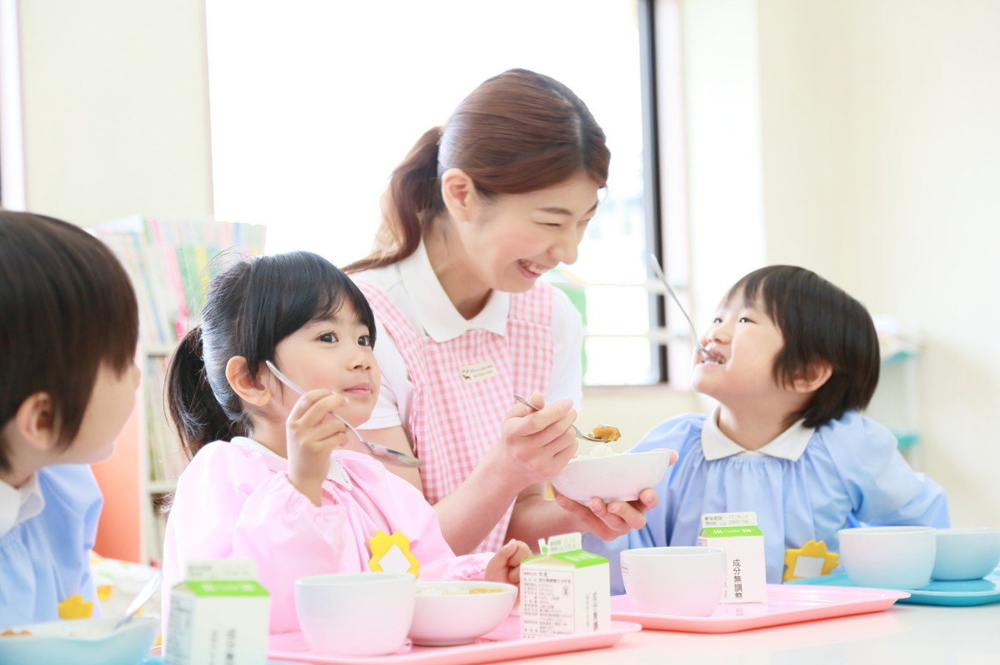
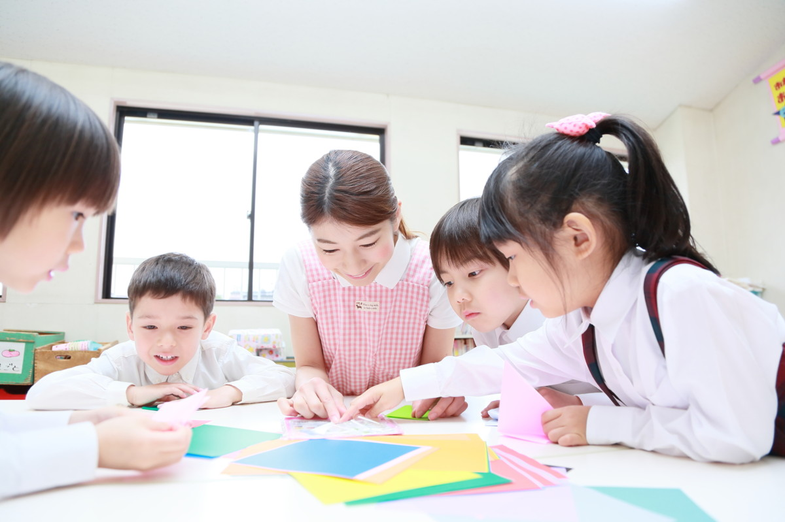
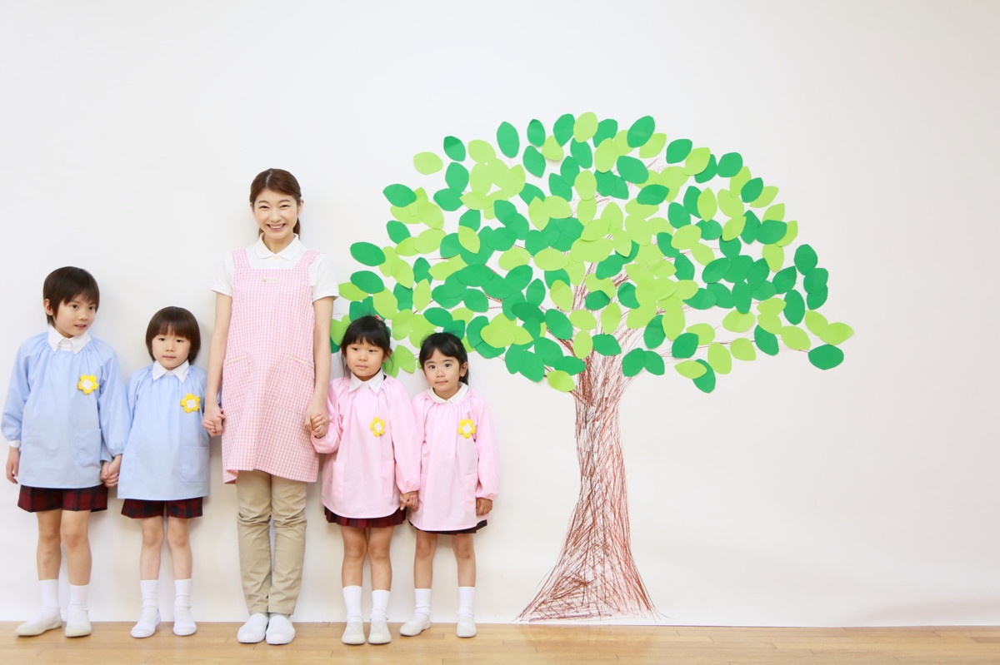

園からのお知らせ

新園舎は広くてすてき!!子供達も毎日、きれいな設備で快適に過ごしています。 中庭からの明るい陽射し、子供達はちょっとした時間にも、中庭の遊具で上靴のまま遊べるので楽しそうです。 また、参観や音楽会、おゆうぎ会、展覧会など、幼稚園での行事は人数制限一切なしで行えるようになりました。 子供達の生き生きと楽しんでいる様子をたくさんの方にご覧いただきたいと思います!!
新園舎ニュース
-

2024-07-07
入園説明会~新宿コクーンタワー~
-

2024-07-01
親子との教室参加者募集
-

2024-06-25
親と子の絵画教室 参加者募集
-
2024-06-05
幼年消防クラブ 発会式
幼稚園での生活
ハル幼稚園といえば『SIあそび』
お子様一人ひとりが、自ら考え、気づき、創意工夫する力、思考する力を養うこと(知能教育)を目的として、別教材を使用しています。 お話をよく聞き、集中してお勉強というのがハル幼稚園の最大の特徴です。しからないでほめて、みんなニコニコ。 『叱らない教育方法』は、20年以上の研究の成果です。「どろんこ遊び」から「英才教育」までがハル幼稚園の教育方針です。 j ※SIあそびとは。 南カリフォルニア大学名誉教授、J・Pギルフォード博士の知能構造(SI)論に基づく、遊びながら知能を高める英才教育で、数や言葉、記憶力、判断力、情緒、あらゆる能力を飛躍的に高めます。


3才から特別講師による指導!
※普通保育の中で行いますので、保育料は別途徴収はいたしません。 ・絵画造形教育 ・英語教育 ・プール指導 ・体操 ・声楽指導 ・中国語(年長5才のみ) ・パソコン使ってのローマ字指導(年長5才のみ)
ハル幼稚園は、「塾」も開講しています。
保育時間終了後から専門の先生による課外保育で子どもたちをもっと輝かせたい(。リンクを設置し「、専用ページ」へ移動させて下さい) これがページに掲載する内容になります。 1ロゴマーク 2イメージ写真(全て使用する必要はありません) 3TOPページコンテンツ どろんこ遊びやお絵かきなどののびのび保育から、英語・体操・プール・音楽やパソコン・知能教育まで、3歳児から 全員の方に様々な体験していただき、社会性を身につけ、心を育てることなど全てにバランスの取れた教育を実施。 以上の様な当幼稚園の特徴を最大限に表現して下さい。 これがリンクボタン(ナビゲーション)


あずかり保育や時間外保育、スポット保育等
お仕事や家庭の事情等にあわせて、安心してご利用いただけます。(リンクを設置し、「専用ページ」へ移動させて下さい)
お問い合わせ・資料請求はこちら！
ハル幼稚園 ☎03-3344-1010